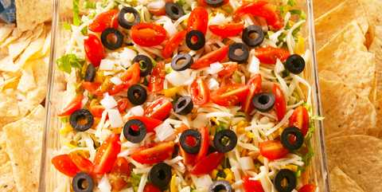

Taco Dip
home

What is taco dip?
Taco dip is very similar to7 layer dip, minus the beans. The creamy dip is made from cream cheese and sour cream, and gets its flavor from taco seasoning, pickled jalapeños, lime juice and garlic powder. If you're not a beans fan, or are simply looking for the easiest dip possible, this is the dip for you.
Ingredients:
Dip:
- 2 (8-oz.) blocks cream cheese, softened
- 1 1/2 c. sour cream
- 1/4 c. pickled jalapeños, finely chopped
- Juice of 1 lime
- 3 tbsp. taco seasoning
- 1 tsp. garlic powder
- 1 tblsp salt
- Kosher salt
Topping:
- 2 c. shredded lettuce
- 1/2 c. shredded cheddar
- 1/2 c. shredded Monterey jack
- 1/2 c. grape tomatoes, quartered
- 3 tbsp. taco seasoning
- 1/4 white onion, finely chopped
- 1/4 c. sliced black olives
Directions
- In a large bowl, stir together cream cheese, sour cream, jalapeños, lime juice, taco seasoning, and garlic powder, and season with salt. Transfer mixture to a large serving dish.
- Garnish dip with toppings and serve with chips.